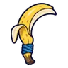
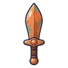
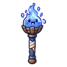

นกกระเต็นดำน้ำ
มอนธาตุน้ำ Lv 22–28
เจอที่
| แมพ | โซน | Lv | ภูมิภาค |
|---|---|---|---|
| ต้นลำธาร | 22–28 | ป่ากองไฟ | |
| หมู่บ้านเรือนเสาร้าง | กลางหมู่บ้านเรือนเสา | 27–28 | ป่ากองไฟ |
| ลำธารซุงติด | กองซุงติดลำธาร | 22–28 | ป่ากองไฟ |
| ถ้ำตาน้ำ | ปากถ้ำตาน้ำ | 22–28 | ป่ากองไฟ |
ค่าสถานะตามเลเวล
| Lv | HP | ATK | DEF | MDEF | EXP | Job |
|---|---|---|---|---|---|---|
| 22 | 1,622 | 39–59 | 5 | 5 | 31 | 23 |
| 25 | 1,622 | 41–63 | 6 | 5 | 34 | 26 |
| 28 | 1,939 | 47–69 | 7 | 6 | 38 | 29 |
ตีด้วยธาตุไหนดี
แรงขึ้น: ลม ×1.75
เบาลง: ไฟ ×0.5 น้ำ ×0.25
วัตถุดิบที่ดรอป
| ของ | โอกาส | |
|---|---|---|
| ขนฟ้าประกาย | 55% | 1 ชิ้น (15% ได้ 2) |
อุปกรณ์ที่ดรอป (4)
| ของ | โอกาส |
|---|---|
 เคียวคู่กล้วยหอม | 0.25% |
 ดาบสั้นทองแดง | 0.25% |
| 0.08% | |
 คบเพลิงสไลม์น้ำใส | 0.06% |
สกิล
หลบ (Lv 25+) · หลบ (Lv 60+) · วาร์ป (Lv 60+)